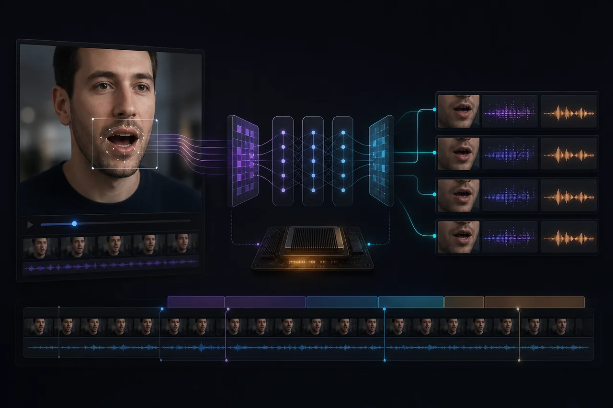

SILENT VIDEO TO SYNCHRONIZED SPEECH
LIPREADING
STUDIO
纯视觉识别、分段流式推理与字幕 / TTS 统一时间轴

“这不是一个只会吐出一行文字的唇语模型 Demo，而是一条把无声视频变成可消费媒体的本地流水线”
VIDEO
SUBTITLE 纯视觉英语识别：不读取原视频声音，只分析连续嘴部画面 视觉前端 + Conformer + CTC/Attention 混合解码，形成完整视觉语音模型链路 YuNet 关键点驱动的嘴部定位、对齐、裁剪与时序平滑，自动产出模型连续帧 CUDA GPU 推理：124 秒视频约 30 秒完成识别，快于视频自然播放速度 5 秒级分段流式处理，片段一完成就立即输出字幕并准备 TTS
TTS
这不是一个只会吐出一行文字的唇语模型 Demo，而是一条把无声视频变成可消费媒体的本地流水线：系统仅分析连续嘴部画面，识别英语文本、分段生成字幕、并行合成自然语音，再让视频、字幕与 TTS 始终服从同一条时间轴。124 秒视频约 30 秒完成 GPU 识别，速度快到足以一边推理、一边播放。
模型看见嘴型，
媒体需要时间。
纯视觉语音识别的难题远不止看清嘴型：人脸尺度、姿态、帧率和嘴部抖动都会影响模型输入；即使文本识别正确，字幕、TTS 和视频若各自计时，也会在流式处理与加速推理下发生漂移。项目需要让模型、分段、语音合成与播放器像一个系统一样工作，而不是把四个脚本串在一起。
一条时间轴，
统一全部输出。
以 YuNet 的人脸与关键点完成嘴部定位、对齐、裁剪和平滑，向视觉前端、Conformer 与 CTC/Attention 混合解码器稳定提供连续帧。视频按固定窗口分段后，首段一完成就生成统一的 start_s + end_s + text + audio 记录；字幕渲染、Piper TTS 与播放调度只读取这份记录，并以视频帧作为唯一播放时钟，彻底切断推理速度对同步结果的影响。
每个输出，都是时间轴上的一次决定。
纯视觉英语识别：不读取原视频声音，只分析连续嘴部画面
01视觉前端 + Conformer + CTC/Attention 混合解码，形成完整视觉语音模型链路
02YuNet 关键点驱动的嘴部定位、对齐、裁剪与时序平滑，自动产出模型连续帧
03CUDA GPU 推理：124 秒视频约 30 秒完成识别，快于视频自然播放速度
045 秒级分段流式处理，片段一完成就立即输出字幕并准备 TTS
05识别、Piper 合成与视频播放并行；首片段就绪后即可边处理边播放
06字幕、语音和视频共用 start_s + end_s + text + audio 时间轴，避免独立计时漂移
07输出分段 JSON、SRT、同 FPS 字幕视频、时间轴 WAV 与带 TTS 音轨的 MP4
08六条轨道，一次成片。
Visual Preprocess
YuNet 人脸与关键点检测，完成嘴部稳定定位、对齐、裁剪与连续帧构建
Visual Speech Model
视觉前端、Conformer 编码器与 CTC/Attention 混合解码的本地推理路径
Segment Scheduler
按 --segment-seconds 切分视频；片段完成即交给字幕与 TTS，不等待全片
GPU Runtime
CUDA 推理与任务并行，保证识别吞吐可追上甚至超过视频播放节奏
Unified Timeline
start_s、end_s、text、audio 是所有输出的唯一事实来源
Media Export
分段 JSON、SRT、同 FPS 字幕视频、时间轴 WAV 与 TTS 音轨 MP4
后续演进 · 以下为路线图，具体阶段以项目说明为准。
从离线识别到边处理边播放
先让无声视频稳定地产生可用文本
- 嘴部预处理与连续帧生成
- 视觉语音模型本地推理
- 分段 JSON 与 SRT 输出
- CUDA 加速与离线结果导出
从离线识别，走向可实时消费的媒体系统
- 分段流式识别与首段优先
- Piper TTS 并行合成
- 以视频帧为时钟的同步播放
- 字幕视频、时间轴 WAV 与成片 MP4 输出
播放时钟只有一个。
- RULE 01
纯视觉边界保持明确：识别不读取原始音轨，结果只来自连续嘴部画面。
- RULE 02
自然语速优先：语音提前结束就静音等待，超出片段才裁剪，不靠粗暴变速硬塞时间窗。
- RULE 03
时间轴只有一个真相：字幕、TTS、视频都从同一组片段时间戳读取位置。
- RULE 04
视频帧才是播放时钟：GPU 可以跑得更快，但语音绝不会因此提前开口。